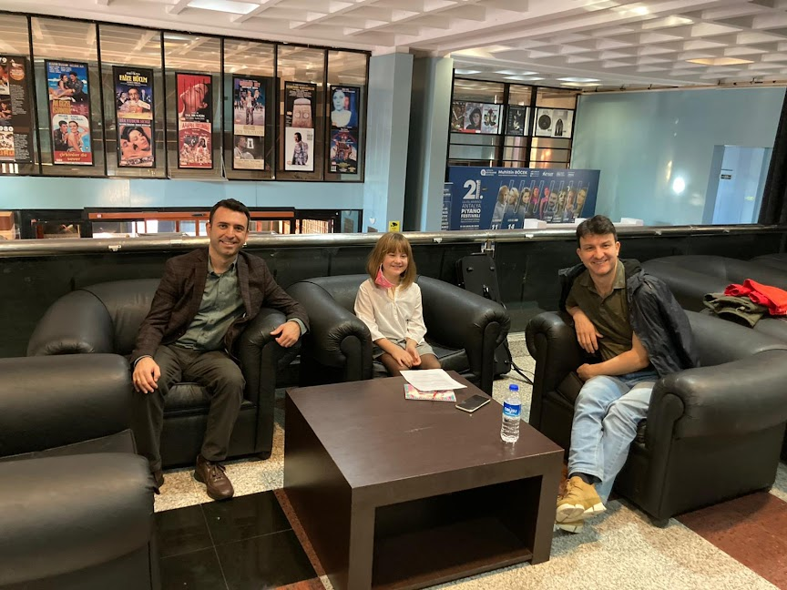

Nil Çağlar
Nil Çağlar- Özcan Ulucan Röportajı Aralık 2021

Nil ÇAĞLAR-Merhaba, benim adım Nil soyadım Çağlar.Şimdi sizinle bir röportaj yapmak istiyorum.
Özcan ULUCAN- Tamam,olur.
NÇ- İlk sorum, kemanı zor bir çalgı olarak görüyor musunuz? Neden?
ÖU- Ha eğer zor görüyorsam diyorsun, neden öyle. Keman zor mu? Keman zor bir çalgı fakat hemen eklemek isterim ki, o kadar güzel ki, güzel çalınca zorluğunu unutturuyor. Evet, zor diyebilirim ama çok çalışınca güzel çalınıyor. Öyle güzel sesler çıkarmaya başlıyor ki insan zamanla zorluğunu unutmaya başlıyorsun. Sonra yine hatırlıyorsun, “zor” diyorsun bak “ayy! ne zormuş” ama sonra yine o güzel sesler seni öyle etkiliyor ki çok sıcacık güzel bir duygu veriyor. Evet söyledim değil mi? Cevap verdim sayılır, evet
NÇ- Öğrenciyken zorlandığınız ya da vazgeçmeyi düşündüğünüz anlar oldu mu? Sebepleri nelerdir ve nasıl toparlandınız?
ÖU- Evet bir dönem oldu ama dur bakayım ne zamandı bu? Evet, 20 yaşlarındaydım galiba ve yurtdışına gitmiştim, Londra'ya gitmiştim. Birçok müzisyenin gelip gittiği bir şehirdir. Aslında memnundum, yani mutluydum ki Londra'ya gittim. Başka şehirdir Londra, çok tiyatro var, çok konser salonları var. Öğretmenim iyi bir öğretmendi fakat herhalde o kadar da onu çok fazla da yakın hissetmedim kendime. Elinden geldiğince iyi şeyler öğretiyordu. Ama öyle duygu olarak… anlıyor musun? Duygu olarak çok alışamadım. Çok çalışmama rağmen tam istediğim kadar iyi çalamıyordum. Daha da çok çalışmaya başladım sonra, ama yine daha iyi istediğim kadar iyi olmuyordu bir türlü. Orada vazgeçme değil ama neden böyle diye düşünüyordum. Neden böyle yani? Biraz hayal kırıklığına uğradığım günler vardı. Çok çalışıyorum diyordum fakat sanki ilerleyemiyorum. Sanki istediğim kadar iyi çalamıyorum. Bunun gibi günlerim orada oldu ama vazgeçmeyi düşünmedim. Sonra bugün düşününce hayal kırıklığı var ama hala hatırlarım onun iyi öğrettiklerini, bazı iyi kuralları hatırlarım. Sonra o öğretmenimden ayrıldım. Başka yere gittim. Başka öğretmen filan derken kendime geldim ve devam ettim çalışmaya.
NÇ- Bildiğim kadarıyla Mimar Sinan Güzel Sanatlar Üniversitesi'nde keman dersleri veriyorsunuz. Bunun yanında konserleriniz de var, ikisini bir arada götürmenin zor yanları var mı?
ÖU-Evet, ikisini bir arada yapmanın zor yanları var. Mesela şimdi buradayım yani Antalya’dayım. Salı günü geldim. Pazartesi günü ders günümdü. Okulda öğrencilerimle ders yaptık. Hatta akşamı da sınıf konseri yaptık. Bu ara çok sıkıştı. Hem bu konserlere hazırlık hem de öğrencilerimle beraber o konsere hazırlanmak kolay değildi. Çünkü bir yandan Tchaikovsky konçertoyu çalışmalıyım bir yandan da derse girip onları dinlemeliyim. Sabırla çalışmalıyım ve Tchaikovsky’nin zor yerlerini unutmamalıyım. Sonra, öğrencilerimin birçoğu güzel çaldı konserde, beni mutlu ettiler. Sonra buraya geldim. Şimdi perşembe günü, bugün yine ders günüm ama yapamıyorum. Mesela bu zorluk var. Yine de hafta sonları ders yapıyoruz. Dönünce cumartesi veya pazar günü onları tekrar çağıracağım. Telafi dersi yapıyoruz ya önden ya da sonrasında.

NÇ- Yılda kaç konser veriyorsunuz ve bu konserlere nasıl hazırlanıyorsunuz? Özellikle psikolojik ve zaman yönetimi bakımından.
ÖU- Evet, konser sayısı değişiyor bende, çok düzenli bir sayı yok. Menajerler var konserleri düzenleyen insanlar fakat ben öyle birisiyle şu anda çalışmıyorum. O yüzden biraz da kendim karar veriyorum. İşte şurada konser olabilir, burada ne çalmak isterim diye. Bu iyi bir şey ama bir yandan da böyle her zaman konser imkânı olmayabiliyor. Bazı günler bazı haftalar boşluk oluyor, o zaman da öğrencilerle daha çok çalışıyorum. Öyle bir durumda çalışma psikolojik oluyor, yani konser hazırlanmak. Nasıl oluyor? Evde çalışırken sanki konserde çalarmış gibi düşünmek iyi oluyor. Bu salonda işte büyük orkestra arkanda eşlik ediyor, çalıyor. Herkes bir şey çalıyor, senin onları dinlemem lazım, duyman ve ona göre biraz çalman lazım. Onların sana göre çalması lazım. Yani bunu düşünerek bunu hayal ederek evde çalışırken bunu unutmamaya çalışıyorum. Yani tabi ki bu demek değil ki hep baştan sona çalacağım. Öyle yapmıyorum onu arada bir yapıyorum ama küçük küçük de olsa bir ölçü iki ölçü, bir ses, iki ses bile olsa böyle durup çalışıyorum, ama bazen tek sesi de çalışıyorum. Arı gibi çalışmaya çalışıyorum. Her ölçüyü çalışmak, her notayı severek çalmaya ve de konserde nasıl çalacaksam bir ölçü bile çalışsam konserde nasıl çalacaksam öyle çalışıyorum o bir ölçüyü. Ben böyle dur bakayım, şimdi biraz yavaş da çalsan onu da söyleyeyim, yani tempoda hep aynı konser temposunda değil, daha yavaş da çalsan yine konserindeki duyguyla çalmaya çalışıyorum. Örneğin Tchaikovsky, keman konçertosunda bu melodiyi yazarken neler düşündü? Neler hayal etti acaba? Neler hissetti? diye merak ederek düşünerek çalmaya çalışıyorum. Yani besteciye saygıyla. O neden yazdı bu konçertoyu diye, yalnızca kendim hissettiğim gibi değil. Tchaikovsky bestelemiş eseri, o sebeple neler düşünerek besteledi? Hangi hislerle? Hüzünlendi mi? Neden hüzünlendi peki? Önemli bence bu. Yani ne kadar çok bilgiye sahipsem, o kadar bana yardım ediyor. Müziği çalarken, çalışırken doğru ve iyi çalmak için. Dediğim gibi Tchaikovsky’i tanımaya çalışıyorum. Nereden tanıyacağım, yaşamıyor. Nereden, kitaplar okuyorum onu anlatan ve bazen internette araştırıyorum; Tchaikovsky yazıyorum İngilizce çünkü her konuda Türkçe kitap yok.
NÇ-Günlük keman egzersizleriniz nelerdir?
ÖU- Yani demek istiyorsun ki böyle her gün konçerto dışında neler yapıyorum? Şöyle; son öğretmenim Maxim Vengerov bir Rus kemancıydı. Son öğretmenimdi o benim okulda. Onun önerdiği basit bir egzersiz var el açmak, el ısıtmak için; herkesin bildiği Schradieck.
NÇ- Evet.
ÖU- Ama hepsini önermedi. Yalnızca o ilk 1,5 sayfayı. Bir tek onu kullanıyorum. Biraz elimi açmak, ısıtmak için. “Çok hızlı da çalmaya çalışma” demişti bana orta hızda çal. Çünkü önemli olan çok hızlı çalmak değil, çalışırken. Ama dengeli eşit basmak, her parmak aynı enerji ile aynı güçle ve aynı hamleyle bassın. Eşit olsun. Acele etmeden ve yavaşlamadan, mümkünse eşit bir şekilde. Ondan sonra bir de gam çalışması yaparım. Gam ama çok da uzun uzun abartmam gam çalışmayı. Saatlerce gam bence yanlış ama her gün bir kere bir gam seçiyorum, mesela re majör. Onu önce mesela uzun-düz seslerle. Düz uzun ses bir yaya bir ses olarak ve de yayı değiştirirken uçta ve kökte, en yumuşak en anlaşılmayacak şekilde vurgu yapmadan buna çalışırım. Sonra bağlıları yaparım. Mesela 4 bağlı 8 bağlı, sonra 16 belki hatta 32 yapmaya çalışırım. Yavaştan daha hızlı gitmeye çalışıyorum. Ondan sonra birde çift sesler var.
NÇ- Evet
ÖU- Onlar zamanla sonradan öğrenilmeye başlanıyor. Üçlü altılı oktav. Bunları da birer kere geçmekte yarar var. Yani üçlü işte onlar da 2-4 bağlı, belki 8 bağlı ama çok uzun çalışmıyorum yine de ne gamı ne de Schradiek’i. Ama her gün şöyle bir birer kere çalıyorum, azıcık da çalışıyorum ama çok da sıkılmak bence doğru değil. Gamlarla, etütler. Artık ben etüt çalışmıyorum ama Paganini kaprisleri çalışıyorum. Aslında etüt sayılır, kolay olmayan etütler, hani müzikal olarak duyguları olan. Her etütte bence bir duygu var. Yine de kaprislerde biraz daha çok var.

NÇ-Son masterclassınızda önce müziği sonra tekniği düşünmemiz gerektiğini vurguladınız. Bu konuyu biraz açar mısınız? Yeterli teknik düzeyde olmadan istenilen müziğe nasıl ulaşabiliriz?
ÖU- Çok güzel bir soru. Böyle nasıl olacak değil mi? Tabii. Ben önce müzik derken şunu kastettim; ellerimiz, kollarımız hata yapabilir, çok çalışsak da arada bir yine hata yapar eller, parmak başka yere basabilir. Ama zihinde çok eseri çok sevdiysek, zihnimizde hata yapmayız. Onun için zihnimiz bizim ellerimizi eğitir, onlara yardımcı olur. Eğer ellerimizi çok çalıştırıp müziği az düşünseydik, yani duyguları, mesela bazı hüzünlü melodiler var değil mi Tchaikovsky konçertoda? Ya da bazı neşeli yerler var. Eğer düşünmeseydim şöyle neşeli ve böyle neşeli tınlamalı ya da burası da biraz böyle hüzünlü tınlamalı diye; her gün çok saat teknik çalışıp müziği düşünmeseydim hatasız da çalsam bence çok güzel duyulmazdı yine de. Duygulu duyulmazdı. Evet, teknik hazırlık ne kadar iyi olursa olsun duyguları vermez bize. Yalnızca hatasız çalabilirsin, nota hatası yapmazsın, ritim hatası yapmazsın fakat duyguları nasıl anlatabilirsin? Onun için dedim, önce müzik.
NÇ-Evet
ÖU- Zaten tanıdığın önceden dinlediğin bir eserse bu, müziğin ne kadar güzel olduğunu keşfedip anladıktan sonra, dinleye dinleye notaya bakarak, heyecanlandıktan sonra ellerini nasıl çalıştırman gerektiğini daha iyi anlıyorsun. Tekniği, yani sonra daha iyi anlarsın. Yoksa, temiz olsun, ritmik olsun, güzel ses, gıcırdamasın ses diye çalışabilirsin.
NÇ- Biraz da 2021 yılında kardeşinizle birlikte Mozart, Debussy ve Strauss çaldığınız son albümünüz hakkında konuşalım. Albümün ortaya çıkış nasıl oldu ve bu bestecilerin eserlerini çalmaya nasıl karar verdiniz? Biraz süreci anlatır mısınız?
ÖU- Aslında çok sene önce bu parçaları ayrı ayrı çalıştık. Sonra piyanist ablam Birsen’le çalıştık. Ondan sonra ben başka piyanist arkadaşlarla da çalıştım. Sonra da eserleri bir yere bıraktık, dinlendiler, çalmadım uzun bir süre. Başka eserler öğrendim sonra ve 1-2 yıl önce yine çalmak istedim. Özledim bu eserleri. Mozart'ın o minör sonatı çok güzel. Biraz hüzünlü ama yalnız hüzünlü değil, bir de böyle hayal ediyorum. Sonra Debussy sonat; o da böyle bambaşka bir yerde. Mesela Mozart bundan 300 yıl önce yaşadı ama yine de insandı o da bizim gibi. O da acıkıyordu, onun da uykusu geliyordu. Onunda hoşuna giden güzel şeyler vardı ve hüzünleniyordu. O da neşeleniyordu. Ondan sonra dans bile ediyordu. Hem bize benziyor hem de 300 sene önce başka hayatlar hayat şartları vardı; araba yok, at arabası var. Ondan sonra, yani onun duyguları müziğinde belki at arabası sesi vardır diye düşünüyor insan o zaman. Bilgi böyle bir şey işte. O zaman araba yoktu, böyle bir sesi hiç kimse tanımıyordu. Taa 19., 20. yüzyıla kadar. Ama bugün 20. yüzyılın bazı bestecilerinin eserlerinde araba sesini tanıyabilirsin. Ama mesela bilgisayar diye bir şey yoktu. Radyo da yoktu. Birçok başka şey vardı, çok daha fazla ağaç vardı şehirlerde. Onun için Debussy’nin müziğinde doğanın, ağaçların sesini; onun müziğinde denizin sesini duyabilirsin. Öyle çok seviyormuş ki doğada gezinmeyi, doğanın seslerini bestelerine yazmış resmen. Son olarak Richard Strauss. O da Debussy’den biraz daha önce yaşıyor ama aslında kesişiyor bir yerde yaşamları. Günümüzden 120- 130 yıl önce yaşadı. İnsan duygularının, çok özlemenin, sevdiğin insanı çok özlemenin duygularını yazmış ya da işte birini beklerken nasıl sabırsızlandığını. Üç farklı zamanda yaşamış, hem birbirine biraz insan olduğu için benzeyen üç besteci hem de bambaşka zamanların, başka müziklerdeki başka renkleri, başka duyguları bir araya getirmek güzel olacak diye düşündük. “Çok özlemişiz” dedik bu üç eseri ve “çalalım” dedik. Hatta kayıt yapıp albüm olsun.
NÇ- Konserde çalmak ile stüdyoda çalmanın benzer veya farklı yanları var mıdır? Nelerdir?
ÖU- Evet, en bariz farkı stüdyoda kimse yok. Ama stüdyonun öbür tarafında tonmeister adında bir ses mühendisi var. Yani 1-2 kişi var orada. Aradaki camdan iletişim kuruyoruz onlarla. İçerde ise yalnızca ikimiz varız ablamla, fark bu. Sahnede ise diyelim ki 500 kişi oturuyor. Seni dinliyor. Böyle büyük bir fark aslında. Ama bir yandan da müziği stüdyoda da sanki insanlar dinliyormuş gibi hayal ederek çalmakta yarar var. Çünkü yine bir gün albüm olunca yine onu insanlar dinleyecek. O gün dinlemese de. Sonra dinleyecekler ve birbirine diyecekler ki “aaa!! Çok güzel, ne kadar güzel çalmış”. Tabi onlar da evde oturup dinleyecek. Böyle bir fark var. Fakat konser salonunda insanları görünce insan böyle biraz daha başka türlü heyecanlanıyor. Ve hoşuna da gidiyor. Çok insan gelmiş seni dinliyor. Güzel müzik dinleyecekler ve sende ona göre biraz heyecanlanıyorsun. Minik minik tedirgin olduğunu hissediyorsun. Acaba nasıl çalacağım, nasıl olacak? Ama bir yandan insanların böyle bakışlarında bir rahatlık ya da böyle iyi niyetli bakışlar görüyorsun. Ondan sonra “aaa!!” diyorsun “Tamam, iyi geçecek diyorsun”. Konserde çalmak daha zor aslında hem çok ama daha güzel. Çünkü, bir kere çalıyorsun o parçayı stüdyoda ve hata yaparsan, hoşuna gitmezse durabilirsin. Tabii sonsuza kadar da tekrar kaydedemezsin ama durabilirsin işte. Şunu tekrar edebilir miyim? Daha güzel çalmak istiyorum diyebilirsin. Konserde öyle bir şey yok baştan başlarsın, nasıl çalarsan çal devam etmen lazım son noktaya kadar.
NÇ- Aklınızda kalan bambaşkaydı dediğiniz bir performansımız var mı, farklı olan neydi?
ÖU- İlginç. Yani. Her konserde mümkün olduğunca iyi çalmak istersin, güzel çalmak istersin. Sesler böyle güzel güzel sıralansın, sana güzel duygular versin ve aynı zamanda dinleyenlere de bu duyguları versin istersin her konser. Bazen insan biraz yorgun olabilir. Çok çalışmış olabilir ve biraz yorgunsundur. Ama konsere çıkmadan önce -tabi yorgun olmamaya bakmak lazım-. Hazır olmazsan stres olursun, bazen böyle şeyler olur. Ve iyi çalamayabilirsin. Bazı konserlerde çok beğenmezsin sonunda kendini sanki dersinki “Ben acaba çok iyi çalmadım mı?” Bazen de şaşırırsın, “Çok güzeldi” derler dinleyiciler gelir sonrasında birer birer ve bazen de tersi olur. Güzel çaldığına inanırsın, fakat sonra kaydı dinlersin “O kadar iyi çalmadım” dersin yani. Birkaç konserde sanki bir anda zaman durdu, herkes dondu bir resim gibi. Ben çalıyor gibiyim ama sanki çalmıyorum, adeta bir resim gibiyim. Çalıyorum aslında. Sanki zaman durdu, donduk böyle. Öyle bir his yaşadım. Ama çok güzel bir histi. Çaldığımı biliyorum. Ses geliyor ama sanki ben pek bir şey yapmıyormuşum gibi sanki yavaşladı her şey, rüyadaki gibi. Çalıyorum ama sanki çalmıyormuşum gibi. Sanki ellerini başkası hareket ettiriyor. Sihirli değnek O kadar rahat bir an. Zorluk yok sanki. Sanki hiçbir zor pasaj yok. Rüyamda sanki çalıyorum ama sanki dinliyorum da aynı zamanda. Hem dinleyiciyim hem de çalanım tuhaf bir şey ama çok mutlu bir duygu olduğunu hatırlıyorum.
NÇ- Maxim Vengerov ile tanışmanız ve onunla yaptığınız projelerden bahseder misiniz?
ÖU- Evet, az önce anlattığım konser onunla çaldığım konserdi. İkimiz yan yana sahnede ayaktayız, çalıyoruz ve de çaldığımız müzik te çok güzel bir konçerto. Wolfgang Amadeus Mozart’ın, keman, viyola ve orkestra için Konçertant Senfonisi. Çok güzel melodileri var. Keman ve viyola iki arkadaş gibi. Maxim Vengerov keman çalıyor, çaldığımız konserlerde ben viyola çaldım. Ben viyola da çalıyorum. Biliyor muydun?
NÇ- Aaaa!!! Hayır, bilmiyordum.
ÖU- Evet, son hocam Maxim Vengerov’un önerisiyle, onun desteklemesi ile viyola çalmaya başlamıştım. 2000 yılıydı onunla karşılaşmam. Evet, o zaman ben 27 yaşındaymışım galiba. En son karşılaşmamızda “viyola da çalsana” dedi, “bak senin ellerin biraz büyük” dedi. “Viyola da olur yakışır, yani çalabilirsin” dedi. Viyola biraz daha büyük ya böyle iri bir çalgı, keman gibi tutuluyor. Onun için aynı zamanda “tekniği de benzer” dedi “çok yeni şeyler öğrenmek zorunda değilsin”. Ama viyolaya göre yayını biraz alıştırırsın, ses için biraz daha uğraşmak lazım. Neyse, soru neydi bir daha sorar mısın?
NÇ- Maxim Vengerov ile tanışmanızı ve onunla yaptığınız projelerden
ÖU- Evet, 2000 yılında tanıştık. Almanya'da ben okuyordum, yüksek lisans gibi solistlik eğitim alıyordum. Başka bir öğretmenim vardı ve bitmek üzereydi bu eğitimim. Sonra duyduk ki Maxim Vengerov yeni öğretmenlerden biri olacakmış, yeni hoca gelecek öğretmen olacak bizim okula. Şaşırdı herkes. Aaaa!! Dünyaca ünlü usta kemancı, Almanya'nın küçük bir şehrine geliyor. Orada öğretmen olacak. Yani Maxim Vengerov ayağıma geldi diyebilirim. Çok şaşırdık Sonra ben onun ilk öğrencisi olmuş oldum. O da genç sayılır. Benim yaşımdaydı biliyor musun Maxim Vengerov. Şimdi biraz yaş aldık ama o zaman o da 26 yaşındaydı. Benden 11 ay küçüktür, Maxim Vengerov. Düşün, hoca daha küçük öğrenciden. Ama o çok daha erken başlamış keman çalışmaya, 4 yaşında filan. Ben 6 yaşında başladım. Ondan sonra çok çalışmış ve daha erken başlamış her şeye. Konserler, turneler ve dünyaca ünlü olmuş. Neyse, o zaman sürpriz oldu, ben sınava girdim. Aaa!!! Maxim Vengerov gibi usta bir kemancı… Çalayım “belki beni beğenir” diye düşündüm. Çok çalıştım, iyi çalıştım. İşimi yani fena çalmadığımı düşünüyordum ama yine de çok çalıştım. Beğendi beni. Ablam da bana eşlik etmişti. Onu da beğendi. Ve aldı sınıfına o zaman, 2000 yılında. Hoca bazen tatlı sert davranıyordu. Ondan büyük olmama rağmen hoca olduğu için bazen gerekirse eleştiriyordu. Böyle minik minik azarladığı bile oldu. Birazcık canım sıkılmıştı, üzülmüştüm. Sonradan anladım ki hakkı varmış. Belki de bir iki bir şeyi fazladan söyledi ama. O başka konu. Dedim ki, fazla azarladı ama haklıymış onu anladım. Sonra ben mezun oldum. 3- 3,5 sene sonra mezun oldum o okuldan. Maxim Vengerov’la ve orkestrayla çaldım mezun olurken. Beethoven’ın keman konçertosunu çalmıştım 2004 yılında. Bugüne kadar da arkadaşlığımızı sürdürdük. Sonradan arada bir beraber konserlerde çaldık. “Konser organize oluyor” dediğimde kırmadı beni “tamam” dedi. Çaldık birçok yerde beraber. Ve pandemi öncesi 2019 yılıydı ve Nisan ayında İstanbul'da bir konser hazırlanıyordu, 2020 Nisan ayında olacaktı ama her şey kapandı ve iptal oldu konser. Yoksa orada çok ilginç bir projemiz vardı. Oda müziği konseri çalacaktık Cemal Reşit Rey Salonu'nda, 4 Nisan’da, hatta tarihi bile belliydi bak. Ona biraz üzülüyorum, konseri yapmadık ama inşallah yapacağız.
NÇ- Türkiye'nin önde gelen keman virtüözlerinden arasındasınız. Sizi Özcan Ulucan yapan özellikler nelerdir?
ÖU- Bilmem ki Sen söyle. Çok iyi. Sorun çok güzel aslında. Çok ilginç bir soru, sevdim. Sorayım kendime. Keman çalmaktan zormuş ama bazı soruları cevaplamak. Keman çalsam olmaz mı cevap olarak? Uzun uzun cevaplanacak bir soru. Düşünmem lazım, ama bu sorunun cevabını insanlar konserime gelirlerse verebilirim. O zaman benim özelliklerimi müzik aracılığıyla hissedebilirler.
NÇ- Dünyada çok iyi icracılar var. Bu kişileri artık sıklıkla görüyor ve dinliyoruz. Günümüzde fark yaratmak için neler yapılabilir?
ÖU- Evet, fark yaratmak… Çok sevgiyle ve isteyerek bestelenmiş müziği çalarken yine çok severek ve isteyerek çaldığın müzik zaten fark yaratıyor. Yani, o yüzden biz, evet tanıdığın böyle duyduğun dünyada kemancılar, piyanistler, besteciler; bunlar bir şekilde bir fark yaratmış oldular. Gerçi günümüzde artık birazcık karıştı iş, çünkü çok fark yaratmasalar da bazıları ünlü oluyor başka sebeplerden dolayı. Çok samimi sebeplerden değil ama başka teknolojik olanaklardan dolayı herkes artık ünlü olabiliyor. Diyor ya; 15 dakikalığına herkes meşhur olacak diye… Onun için ünlü artık birazcık değerini kaybetmeye başladı, bence. Herkes biraz ünlü olabilir. İşte, her gün kot pantolon giyip fotoğraf çekersen Instagramda ve bunu 10 sene yaparsan ünlü olursun. Ama sadece ünlü olmak için bir şeyi yapmak seni farklı kılmıyor. Yalnızca, yine çok severek bir şey yaparsan farklı oluyor. Çok severek yaparsan bir şeyi çok güzel, mesela müzik güzel bir şey çok değil mi?
NÇ- Evet.
ÖU- Ama farklı farklı müzik türleri var, uzatmayayım, toparlayayım. Orada da dürüst müzik, yani ünlü olmak için bestelemediğin müzik samimi oluyor. Ünlü olmak için dedim ya türlü türlü tuhaf şeylerle ünlü oluyorsun artık. Örneğin, fotoğraf çekiyorsun ve kendini göstermek istiyorsun. Öylesine ünlü ama güzel bir duygu vermiyor sana. Neyse, artık çok fazla uzattım, sonuçta fark yaratmak için yine sevdiğin güzel bulduğum bir şeyi çalışarak en güzel şekilde yapmak gerekir.
NÇ- En son soru. Benim gibi henüz yolun başında olan öğrenciler için tavsiyeleriniz nelerdir?
ÖU- Sen ne kadar zamandır müzik dinliyor ve keman çalıyorsun?
NÇ- 2020 Eylül'de.
ÖU- Keman çalışmaya mı başladın?
NÇ- Evet
ÖU- Eylül 2020. Biraz öncesi var mı?.
NÇ- Keman olarak soruyorsanız 2020 ama öncesinde de biraz piyano ve müzik eğitimi aldım
ÖU- Sana tavsiyem konserlere gitmen. Ve de orada müziği canla başla dinlemen. Kulaklarını böyle çok açarak… Masal gibi güzel hikayeler canlandırman kafanda. Çok sevdiğin beğendiğin konserler olacak. Dinlediğin eserleri keşfetmeni, çok sevmeni isterim, dilerim. Bazılarını konserleri belki o kadar ilginç bulmayabilirsin. Ama çok ilginç ve çok böyle heyecanlı bulduğunu konserler olur. Onlardan örnek almanı “müzik böyle ne kadar güzel” diye düşünmeni, onu düşündükçe de kolay olmasa da çalgın üzerinde çalışmayı. İyi niyetli ol, mutlaka bir gün hatalar düzelecektir, buna inan. Zor yerler, zor pasajlar da kolaylaşacaktır. Yeter ki sen iyi niyetli ol ve çalışmaya devam et. Biraz dinlen, sonra yine çalış. Sonra yine dinlen, ama sonra yine çalış. Yani, sanki böyle harika masallarda koşturuyorsun gibi gelen müzik, onu hatırla ve bil ki çalıştıkça mutlaka dinlerken ve belki bazen çalarken çok güzel duygular, çok hoş sıcacık duygular ve yaşayacaksın. Buna inanmanı dilerim. Tabii bu çalışarak hep dinlenip çalışarak ve dinlenip devam ederek olur.
NÇ- Teşekkür ederim.
ÖU- Rica ederim ben de çok teşekkür ederim. Harika bir röportaj oldu ve çok hoş sorular vardı. Beni de düşündürdü ve keyifle cevapladım.
Nil ÇAĞLAR'ın Aralık 2021 de gerçekleştirdiği bu röportaj sonrasında gelecek olan röportajlar için bir başlangıç noktası olmuştur. ~ Ali Çağlar